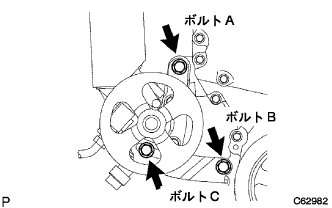
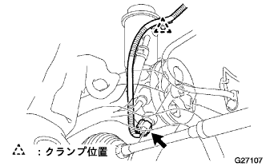

ベーン ポンプASSY 取り付け |
| 1. ベーン ポンプASSY取り付け |
|  |
ボルトAで、ベーンポンプASSYを仮付けし、Vベルトを取り付ける。
ボルトBおよびボルトCで、アジヤステイングストラツトを仮付けする。
| 2. プレッシャフィード チューブASSY取り付け |
 |
ユニオンナットレンチ17を使用して、プレツシヤフィードチユーブASSYを取り付ける。
 |
合わせマークを合わせ、ホースNo.1をオイルリザーバASSYに取り付ける。
| 3. ベーンポンプ ステー RR取り付け |
 |
ステーリアのツメ部を図のように当て、ハウジングリヤに取り付ける。
 |
ヒートインシユレーターのツメ部をステーリアの穴に引っかけ、ボルトを取り付ける。
|  |
オイルプレツシヤセンサハーネスのクランプ1箇所をオイルリザーバASSYに取り付け、コネクターを接続する。
| 4. ベーンポンプVベルト(パワステベルト)調整 |
 |
Vベルトの張力を調整し、調整用ボルトBを締付ける。
固定用ボルトAを締付ける。
| 5. Vベルト張力·たわみ量点検 |
 |
張力およびたわみ量点検
| 新品取り付け時 [ｍｍ] | 点検時 [ｍｍ] | |
|---|---|---|
| Vベルト | 8.0-9.0 | 12.5-13.5 |
| P/Sベルト | 8-10 | 11-13 |
| 新品取り付け時 [N{ｋｇｆ} ] | 点検時 [N{ｋｇｆ} ] | |
|---|---|---|
| Vベルト | 700-800 {71-82} | 300-400 {31-41} |
| P/Sベルト | 441-539 {45-55} | 245-343 {25-35} |
| 6. ファン & オルタネータVベルト取り付け |
Vベルトを各プーリに仮付けする。
| 7. ファン & オルタネータVベルト調整 |
 |
ハブナットレンチまたはバーなどを使用して、オルタネータを車両フロント側に引いて、フアン & オルタネータVベルトの張力を調整する。
 |
調整用ボルトAを締め付けてから、固定用ボルトBを締め付ける。
| 8. パワーステアリングフルード補充 |
| 9. パワーステアリングフルードエア抜き |
車両をリフトアップする。
エンジン停止状態で、ステアリングホイールのロック ツゥ ロックをゆっくり数回行う。
車両をリフトダウンする。
アクセルペダルを踏まずにエンジンを始動して数分放置する。
エンジン回転数1000r/min以下で、ステアリングホイールのロック ツゥ ロックを数回繰り返す。
エンジン回転数1000r/min以下で、ステアリングホイールの据え切り保持(ステアリングホイールをいっぱいに切った状態で5-6秒保持)を、2-3秒間隔で数回繰り返す。
オイルリザーバの泡立ちおよび白濁が消えるまでエンジンを停止して放置した後、再びエンジンを始動しアイドリング回転でのロック ツゥ ロックや据え切り保持を行っても泡立ちおよび白濁がないことを確認する。
オイルリザーバフルードレベル点検を行う。
| 10. フルード漏れ点検 |
図の場所からフルードが漏れていないか点検する。

| 11. エンジンアンダ カバー RH取り付け |
スクリュー2個およびボルト2本で、エンジンアンダーカバーRHを取り付ける。
ナットを、締め付ける。
| 12. フロントタイヤRH取り付け |
| 13. フルード量点検 |
車両を水平にする。
エンジン回転数が1000r/min以下で、ステアリングホイールのロック ツゥ ロックを繰り返し、フルードの油温を上げる。
リザーバキヤツプをオイルリザーバから取りはずす。
オイルリザーバの口から、フルードの泡立ちおよび白濁がないことを確認する。
エンジン回転時と停止時の、フルードレベルの差を測定する。基準値外の場合は、エア抜きを行う。エア抜きで効果が出ない場合は、油圧系統のフルード漏れを点検する。
 |
フルードレベルが基準内にあることを点検する。基準より少ない場合は、基準範囲内の上限になるように、パワーステアリングフルードを補充する。
 |
リザーバキヤツプおよびリザーバカバーを取り付ける。
| 14. ベーンポンプオイルリザーバ カバー取り付け |